每年高考、中考临近的时候，都有考生家长给我留言，希望我能出一份考生在考试期间的三餐食谱，以下，我就把它分享给您。
其实，在考试期间，以及考试前一周（一共两周时间），考生的一日三餐安排，有两个很重要的原则。
考试的前一周和考试的当天，都不是补的时候，而是要尽量给孩子的肠胃减负。无论是在家给孩子做饭，还是出去给孩子订餐，家长一定要注意给孩子吃清淡、好消化的食物。
为什么呢？因为考试的时候，孩子的精力都在大脑。大脑需要充足的血液来保持其高速运转，所以这时候孩子的肠胃真的不能吃下太多的东西。就算是想给孩子补，也不是现在，现在来补为时已晚了。
家长千万不要想着孩子要考试了，就给他吃一些特别补的、孩子平时都没吃过的东西，比如，一些昂贵的滋补品，或者在给孩子订餐的时候订一些特别高级的东西。
如果孩子平时没怎么吃过这些食物，考试期间您突然给他吃，对他的肠胃反而是一种刺激，孩子的肠胃不适应反而帮了倒忙。
考试期间，尽量给孩子吃他平时习惯吃的东西，包括给他加餐的一些小食品也是如此，都尽量选择孩子平时经常吃的。
如果孩子平时不怎么吃零食，那您也不要特意在考试期间给他准备加餐的零食。
很多家长平时很注意孩子的饮食健康，不让多吃零食，要多吃蔬菜什么的，但临到考试的时候对孩子就放宽了要求。有的家长还主动给孩子临时加餐，生怕孩子能量不够了。
家长朋友一定要记住，考试这几天是关键时期，孩子在这几天反而要吃得比平时更健康才行。不能因为心疼孩子，就放松对孩子的约束，让他多吃零食。
如果孩子平时吃的零食对身体没多少好处的话，那考试的时候多吃零食就更没有好处了。况且，猛然间给孩子多吃那些不健康的食品，会给他的消化系统和肝脏系统增加额外的负担，这是一件非常不合算的事情。
比如，有一个孩子平时家里很少让她吃巧克力，但到了考试那天，她爸早上特意给孩子买了一大块巧克力，想着可以在孩子考试时补充能量。孩子可高兴，一口气都给吃了。结果进了考场后，这一大块巧克力堵在胃里，消化不了，孩子感觉非常难受。当天晚上孩子就发热了，最终影响了考试。
很多孩子在考试之前都爱吃巧克力，觉得吃巧克力既可以补充糖分又可以提神。如果是平时经常吃巧克力的孩子，那在考试的时候吃一点是可以的，但不经常吃的孩子，家长最好谨慎一点。不要让自己的爱心在这时候泛滥了，好心办坏事，最终影响了孩子考试。
家长朋友一定要记住，考试期间不要给孩子吃平时没怎么吃过的零食。
早餐吃什么呢？我的建议是这样：第一，要有水果；第二，要有鸡蛋；第三，要有粮食。
1.水果建议是橙子
水果，我建议是橙子，因为橙子有提神的作用，而且是很好的一个缓解压力的水果。
2.吃鸡蛋羹或荷包鸡蛋糖水
蛋类最好是鸡蛋，鸡蛋是提气的，孩子早上进考场之前吃鸡蛋的话，考试的时候就会精力充沛。而且鸡蛋有一个收敛的作用。有些考生怕中途上厕所影响考试，但吃了鸡蛋后就不会有这个顾虑了。即便是早餐吃荷包鸡蛋糖水，又喝了粥，也不用担心，整个上午都是可以安心考试的，不会尿频、憋尿。因为鸡蛋能很好地收住，这也是吃鸡蛋能固肾气的原因。
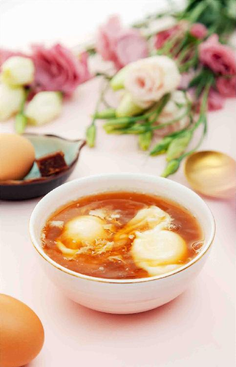
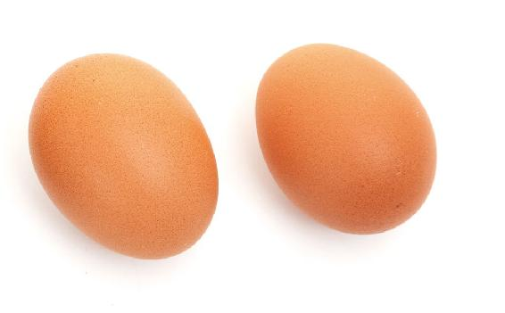
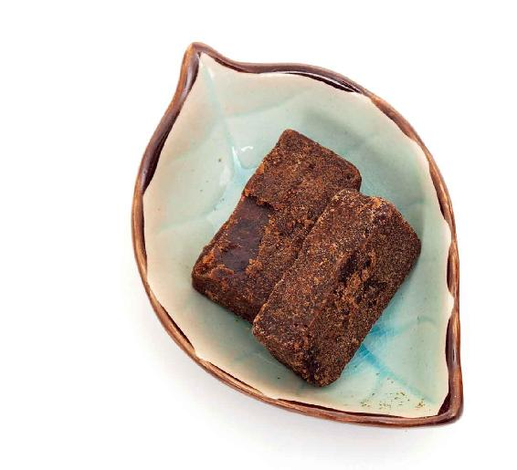
原料：鸡蛋（1〜2个）、少许红糖。
做法：
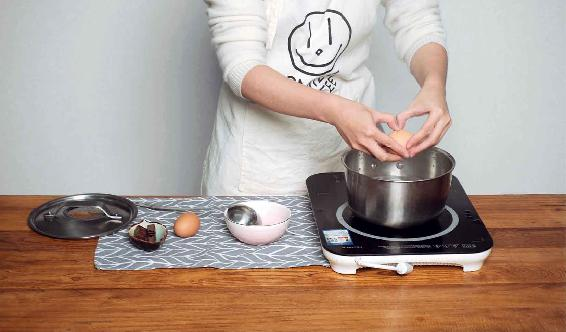
1.先把水烧开，然后打1〜2个鸡蛋进去，等蛋白凝固了就关火。
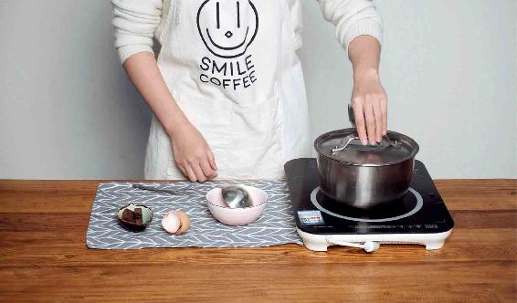
2.不要立刻掀锅盖，等上几分钟，水不烫了再把它盛到碗里（这样蛋白不会煮老而蛋黄又不会溏心，吃起来又嫩又好消化）。
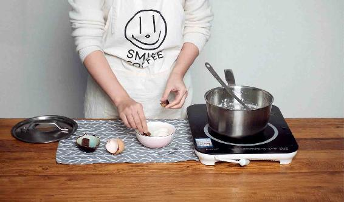
3.碗里化好糖水，然后把煮好的荷包蛋放入碗里，调和一下，一碗荷包鸡蛋糖水就做成了。
鸡蛋怎么来做呢？我建议可以给考生蒸一个鸡蛋羹。
如果早上来不及的话，那就给孩子做一个荷包鸡蛋糖水。
荷包鸡蛋糖水既可以给孩子很好地补充体力，又有一定的糖分（糖分其实是大脑的唯一能量来源），孩子吃了以后，在考试的时候，大脑就有充足的能量来思考。
如果孩子的身体比较虚，家长可以在煮荷包鸡蛋糖水的时候，往里加一两片小小的人参一起煮。
如果是经期的女生，您可以给她加一点点当归。当归煮出来的荷包鸡蛋糖水有止痛的作用，可以让女生在考试的时候更安心。
3.吃粥和面食
如果考生要吃面包，自己家里做的面包没问题，但市场上卖的面包，有一些会加有膨松剂和添加剂，对孩子的身体是没有好处的，而且有些也太腻了。
对考生来说，清淡的粥和面食才是最好消化的，我们可以给孩子喝点大米粥，因为大米粥比较补气。
考试期间早上最好不要喝纯小米粥，小米粥是安神的，适合晚上来喝。
孩子吃面食，最好是吃发面的面食，因为比较好消化，如馒头、发面烙饼。它们有足够的糖分，可以给大脑提供充足的能量。
红糖的糖分消化吸收得比较快，而面食的糖分消化吸收得比较慢，这样可以确保在整个上午都有充足的糖分来给大脑提供能量。
早饭的时候，要不要再吃其他一些补的东西呢？比如，肉、牛奶。
早上吃肉，我觉得没有必要，也有点儿油腻了。肉类的消化时间是相对比较长的，如果孩子在考试的时候，胃里还一直在消化这些肉，对他考试就会有影响。
考生早上也是不适合喝牛奶的。牛奶是安神的，可以让孩子在晚上喝。
如果早上孩子不爱吃鸡蛋，那您不妨给孩子喝一点豆浆，但要是吃鸡蛋的话，豆浆就不要喝了，鸡蛋和豆浆本来可以同时吃，但是考试前吃太多的蛋白质，孩子肚子里可能会胀气。
我建议的这个考生早餐，食谱其实很简单，基本上都是中国人传统吃的那些东西。不要小看传统的东西，有时候它们真的是特别有道理的。
有的家长还想了解孩子的午餐和晚餐应该吃些什么。
其实，考试期间的午餐和晚餐，跟考试期间的作息是密切相关的。
我想给考生和家长几点提醒，这个午餐食谱不仅适用于高考、中考的考生，也适用于不参加考试的学生，因为在整个农历五月，是养护孩子身心的一个关键性阶段。所以，作为家长，在孩子的饮食、作息上都可以给一点助力。
首先，考试期间的午餐应该吃简单一点，最好不要占用孩子太多的时间，这是一条很重要的原则。
因为考试期间正好是仲夏之月，而在这个月份，孩子不管是参加考试，还是紧张地复习，对心脏来说都是一个很大的负担。孩子在这时候是特别容易困乏的，所以每天午饭以后，家长一定要让孩子睡个午觉。
这个月份，即使是平时不爱睡午觉的孩子，吃完午饭以后，如果您让他马上去学习，他是打不起精神来的，总想瘫在沙发上或者躺在床上赖一会儿。原因就是这个月份心脏承受了极大的负担，尤其是孩子经过上午紧张的考试之后，更是疲惫。
在中午的时候，特别是在考试期间，时间本来就很紧张，家长要尽量给孩子准备一顿简单的午餐，让他能够在吃完之后，可以抓紧时间躺下来休息一会儿。即便没有躺下来睡午觉的条件，也让孩子闭目养神一会儿，这是非常重要的。
在其他季节，可能不用非要这么做，但在仲夏之月，家长最好是让孩子有一个午休时间，以便养护好心脏。
因为心、脑是相通的，人们经常说用心学习，用心思考，这个“心”字，古人可不是随便乱用的。难道他们不知道是大脑在思考吗？其实，这是在提示我们心、脑是相通的。所以考试的时候让孩子在中午休息一下，养护心脏，也就是为大脑充电。到下午的时候，孩子再进考场思维就会更加敏捷。
午餐具体应该怎么配呢？
要让孩子有效率地吃，也就是说，不要有太多需要剥壳的东西，或者是啃骨头、吃很硬的东西。这些都比较花费时间。
不要让孩子吃一些难以消化的东西，否则到下午考试时，脾胃还在消化食物，这样就会分散用来考试的精力。
如果您要给孩子吃荤菜的话，就是鱼肉和虾肉，它们易于消化。但要注意，不要给孩子吃那种带很多刺的鱼，孩子挑起刺来会很浪费时间。可以吃一些深海鱼，它们的大刺在切割的时候就已经被分离了。或者给孩子吃一些剥好壳的虾仁。虾是补阳气的，吃了以后会让人更精神，而且比较好消化。吃一点虾就可以了，不用吃太多。
蔬菜方面要给孩子配绿色和红色的蔬菜，重点是红色蔬菜。
红色蔬菜能补心养脾，比如，红色的胡萝卜、甜椒、西红柿。西红柿其实还可以清心火。在绿色蔬菜中，要注意吃深绿色的蔬菜，比如，芥菜、西兰花。
再加上一碗清淡的汤，一碗米饭，这样一顿午餐就已经足够了。
1.孩子在考试期间最需要维生素、矿物质和糖分，而最不需要蛋白质
不用担心孩子在考试期间营养不够。考试期间是没有必要点什么考试餐、营养餐的，特别是这里面有孩子平时不经常吃的食物，最好不要点。因为孩子在这时候吃一些脾胃不适应的食物，很可能适得其反。
如果考试当天在外面订餐，您就点孩子平时经常吃的菜就可以了。他的身体和肠胃对这些经常吃的饭菜会比较适应，不至于造成额外的影响。
考试期间，最需要的是哪些营养素呢？
其实，这时候身体最不需要的是蛋白质，最需要的是维生素、矿物质和糖分，所以午餐尽可能让孩子多吃一些蔬菜、水果和主食，这样就可以保证大脑需要的营养素了。
2.素菜中，不容易消化的山药、芋头等要避免
素菜中一些不容易消化的，如山药、芋头，我们要避免。这些东西都很滋腻，吃下去以后，长时间不容易消化，容易顶住孩子的胃。
考试期间天气很热，孩子睡午觉起来后有一点口渴，这时可以给他吃一点点水果，不用多，也可以给他做一个西红柿汁。西红柿有清火的作用，特别是可以清心火。夏天的下午天气炎热，喝这个能让孩子感觉凉爽，缓解午后的困乏，考试时更容易集中注意力。
午饭后，让孩子小睡片刻。午睡醒后，一般会感觉有些口渴，可以喝这个汁，能给身体和大脑迅速补充能量。
其实就算不是考试时，夏天午睡后给孩子喝这个解渴，也比冰饮要舒服。
小时候，一到夏天，父亲经常给我们这么吃，那时候蜂蜜难得，用的是糖。
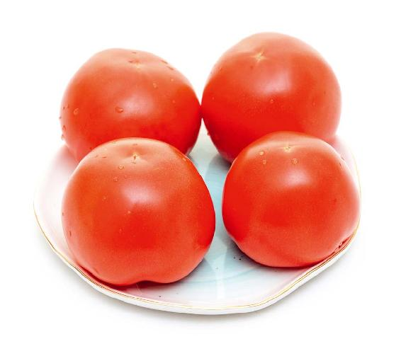
原料：西红柿、蜂蜜。
做法：
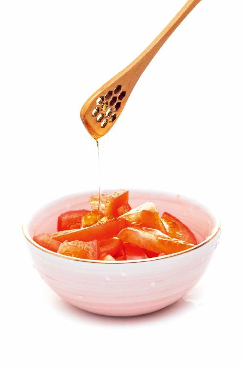
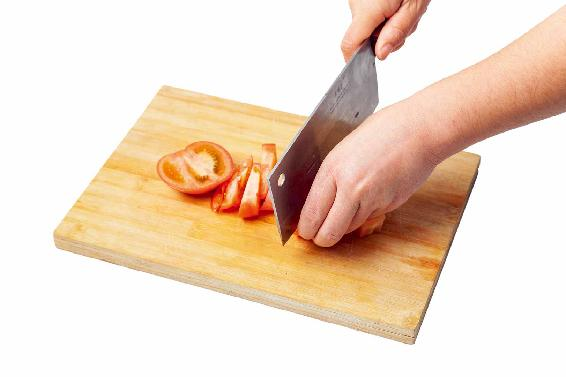
将西红柿切碎，拌上蜂蜜，腌制半小时，会出很多汁。
蜂蜜西红柿汁
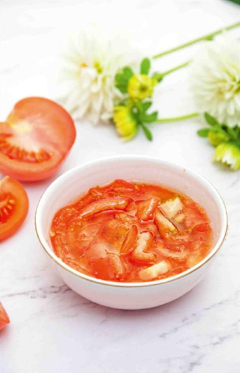
还记得高考时，父亲在考场附近借了朋友家一个房间给我午休。他自己在外面坐等，怕我睡过头，一直盯着表看。午睡起来，开门就见他捧着一大碗鲜红鲜红的糖拌西红柿汁，是他在我休息时，亲手做的。
喝下之后，午后的昏沉一扫而空，神清气爽。那酸酸甜甜的滋味清凉入心，真是永生难忘！
晚上的饭，最好是少吃一点。
孩子考试期间的晚餐，不宜吃鸡蛋。我说过，在考试的当天，早餐一定要吃一个鸡蛋，它可以提气，帮助孩子在考试的时候集中注意力。但晚上就别给孩子吃鸡蛋了，因为鸡蛋是提气的，吃了后可能会有点兴奋，影响睡眠质量。
有些家长喜欢晚上给孩子喝一点奶，认为喝牛奶可以给孩子补一补。但有些孩子喝太多的牛奶以后，容易生痰湿，而痰湿会干扰睡眠。
如果您一定要给孩子喝一点奶，那就喝酸奶。酸奶有安神的作用，又能调节肠道，还比较好消化，比牛奶要好得多。
以上三餐的搭配，都只是参考建议，您可以从中选择孩子平时习惯吃的餐食。如果其中有孩子平时不怎么吃的东西，那么在此关键时期也不要勉强去吃。
总之，在生活中，有时候越是重大的事情，越是要用平常心去对待它，这样才不容易犯错。用平常的心，吃平常的饭，让孩子在精神上、身体上少一点压力和负担，这是作为家长在考试期间对孩子最好的帮助。
备考期间，家长操心的事情，第一件是怎样让孩子吃好，第二件是怎样让孩子睡好。
考试期间的高质量睡眠对孩子尤为重要。家长朋友可以通过做三件事来帮助孩子提高睡眠质量。
苹果的香气具有使人心情愉快的作用。孩子经过一整天的紧张考试，脑神经其实是紧绷的，这时候闻一闻苹果的香气能舒缓脑神经，可以轻松入睡。
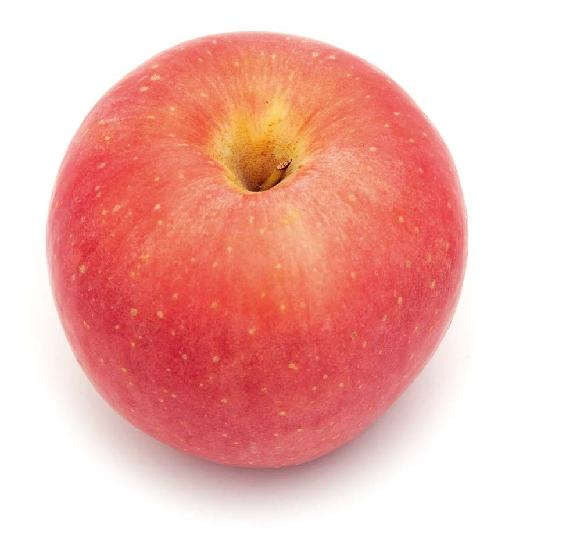
孩子在考试或备考期间，有时候会复习功课到深夜，如果这时候给孩子吃不合适的夜宵，可能睡不安稳，因为“胃不和则寝不安”。要是吃得太多，早上起来孩子会没有胃口，可能会影响孩子白天的考试状态或复习质量。所以，如果孩子复习到半夜，肚子饿了，家长不妨用苹果来代替夜宵。
用苹果来代替夜宵有什么好处呢？
1.快速给大脑补充能量
苹果含有非常好的果糖，给大脑补充能量很快。
2.好消化
苹果吃到肚子里很快就能消化，这样孩子睡觉也能睡得安稳。
3.让孩子精神愉悦
苹果含有一种能使大脑愉快的物质，对于舒缓孩子的情绪非常有好处。
大多数的水果都偏凉，容易伤胃，但苹果是一种非常平和的水果，对孩子的脾胃有保护作用。
如果您觉得孩子的脾胃比较虚，可以把苹果煮熟了给他吃。
苹果也是为数不多的煮熟以后依然有很好营养价值的一种水果。
苹果中含有一种果胶，生吃的时候，有促进肠道蠕动的作用，能够通便；如果煮熟了吃，它还能止腹泻，孩子脾胃虚弱拉肚子，家长是可以给他吃煮熟的苹果的。
1.煮苹果糖水
苹果的果胶经过加热，会变得很黏稠，吃起来口感很好，对孩子的肠道有很好的缓解腹泻的作用。
苹果煮好以后，可以再加一点点的糖或者调一点点蜂蜜，然后给孩子喝苹果糖水。
做法：
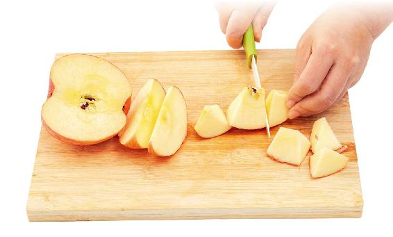
1.先把苹果带皮切成小块儿。
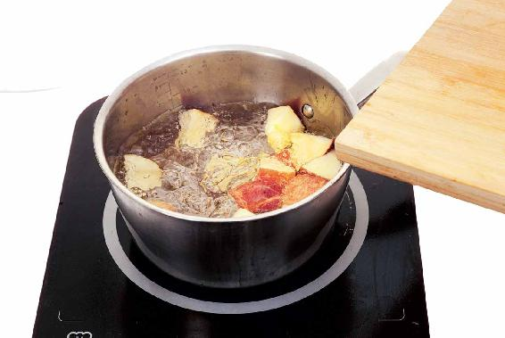
2. 锅里烧开水，把切成小块的苹果放进去，煮两三分钟就可以了。如果孩子喜欢吃软一点的，多煮几分钟也没事儿。
2.烤苹果
先把苹果的核挖出来，然后把整个苹果带皮一起放到烤箱里，烤20〜40分钟，这个时间可以根据烤箱的火力来决定。
烤到什么程度呢？看见苹果的外皮变成褐色皱起来了，流出了汁，这时候就可以把它从烤箱里取出来了。苹果晾温了以后，再给孩子吃。
烤苹果是非常好吃的，又香又甜又软，而且经过烤制以后，糖分会更加突出，吃起来会感觉很甜，很舒服。实际上苹果还是原来那个苹果，并没有放任何的糖。
烤苹果
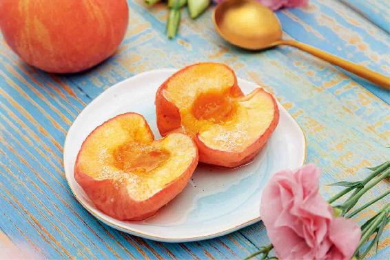
如果孩子晚上睡觉的时候，觉得心里很烦热，翻来覆去睡不好，这时候，家长可以给他冲一道清心火的茶饮，来缓解心烦、紧张、睡不好的情况。
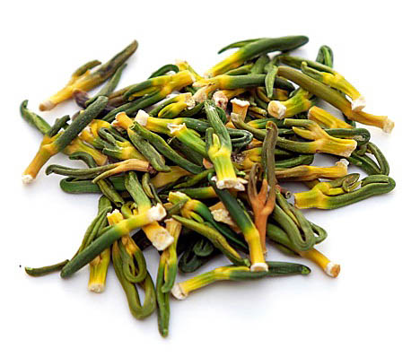
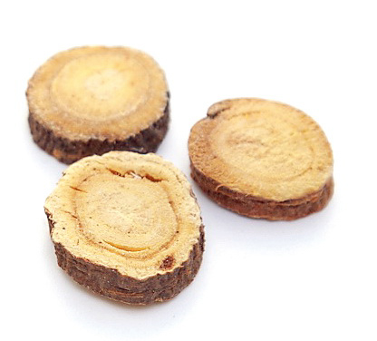
原料：莲子心2克，甘草5克。
做法：
把莲子心、甘草放入杯中，用开水冲泡。要稍微多闷一会儿，因为甘草要多闷一会儿才会出味。甘草可以调和莲子心的苦味，喝起来有一点微甜微苦的感觉。
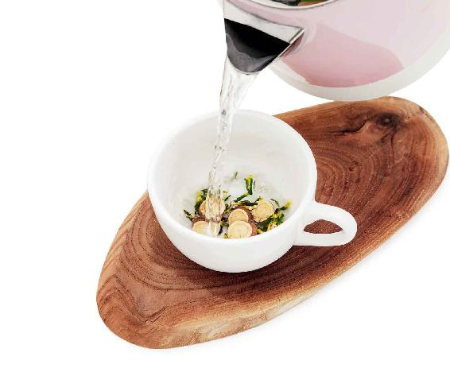
功效：
清心火，生津止渴，调理心烦、失眠。
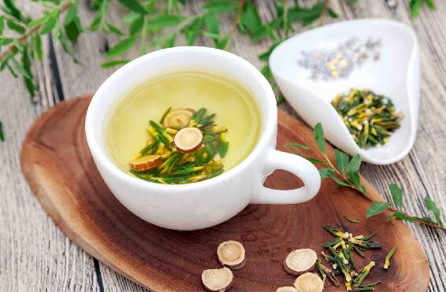
孩子心火旺有哪三种表现呢？
第一，舌尖发红，甚至舌头长溃疡。家长可以看一下孩子的舌头，如果舌尖发红，就是心火旺了，甚至有的孩子的舌头都长出溃疡了。
第二，小便发黄，甚至发红。
第三，晚上睡觉的时候总觉得睡不好，甚至睡不着，心里很烦、很热。特别是到了初夏，天气越来越热，内热、外火加在一起，孩子就会总喊热，影响睡眠。
如果孩子有以上三种表现，家长就可以给孩子喝这道清心火茶饮。
夏天，有时候我们会觉得很热，口干舌燥的，但不一定是真的缺水，而是因为心火太重了。这时候就非常想吃冰激凌、喝冰水，但家长最好不要在高考、中考的时候，给孩子吃这些过凉的东西。因为它们会非常伤孩子脾胃的阳气，也会影响肠胃的消化和吸收，甚至有的孩子可能还会因此生病。
以上这三种，都是可以帮助孩子在考试的时候睡好的方法，只有让孩子在晚上睡好，他们白天才会有更充沛的精力去考试。
读者评论：喝了这道茶后，孩子不急躁了
爱听的喜马拉雅马：这几天，我家小孩正在备考中，我感觉她压力很大，舌尖发红。听了陈老师的课，给她喝莲心甘草茶。她说很好喝，也不是很苦。喝了几天后，舌尖就不怎么发红了，人也不显得急躁了。谢谢陈老师！
思肺：莲心甘草茶是真管用！前段时间舌头上长了个很大的溃疡，痛到不能吃饭、说话，没想到喝了莲心甘草茶三天就好了！真的太神奇啦！
允斌解惑：女性经期不要喝莲子心甘草茶
惠媛惠媛：女性经期能喝莲子心甘草茶吗？
允斌：女性经期不要用莲子心。
蝶：心气不足的人平时吃莲子，莲子心留还是不留？
允斌：吃带心莲子，与单独喝莲子心，很不一样。有莲子肉的补益作用坐镇，莲子心一起吃是很好的。腹泻或大便不成形的人，吃莲子可以去掉莲子心。
让孩子在考试前一天晚上早一点上床睡觉，哪怕是有些事情没有完成，宁可让孩子第二天早上早一点起来做，也不要让他在考试头天晚睡，这一点非常关键。
我想再次提醒所有的学生和家长，不管是在考试期间还是在平时的学习中，如果孩子晚上的作业做不完，宁可早上早点起来做作业，也不要耽误睡眠时间。晚睡对孩子的发育是特别不利的。
其实，健康的原则跟生活的道理都是相通的，即便考试对孩子、家长来说是天大的事，也不能用孩子的身体健康做交换。
给大家分享两个考场提神的小方法，高考、中考或者其他什么考试，都可以拿来一用，甚至成年人考试，都可以用来提神。
这是我外婆传下来的小秘方。
这个方法非常简单，就是切非常薄的一片人参，像大拇指的指甲盖那么大的一片。在考试前，含在舌头下面，这样整场考试，人都会特别有精神。
你不需要嚼人参片，也不需要咽下去。人的舌下有丰富的血管，通过透皮吸收，就可以让人参发挥作用。在一些心脏病急救的时候，给病人用的药物就是通过舌下含服的，为的就是让药效能迅速地被人体吸收。
考试中，含在舌下的人参，会持续提升身体的元气。人参提升元气的作用是非常强的，可以让考生很好地在考场上集中注意力。
薄薄的一小片人参，只是考试这几天来用，对于孩子们来说是没有问题的，除非孩子正在肺热咳嗽。
什么是肺热咳嗽呢？就是咳嗽时吐出来的痰是黄色的。
还有爱流鼻血的孩子，也不要用这个方法。
有些学生体质比较弱，在这个时候，通过舌下含服人参来参加考试，是非常适合的，尤其是容易体虚的女生。
这个提神的小方法，它的适用性非常强。不管是大人参加成人高考或公务员考试，或者其他的一些资格认证类的考试，还是学生中考、高考，都可以使用。
不只是考试，一些需要高度集中注意力的重要工作或者长时间的谈判，都可以含一小片人参在舌头下面。
人参提升元气的作用，在补气药中排第一名，如果老年人的身体比较虚弱，需要吃人参来保健，不妨也试一试这个舌下含服的方法。
人参片含在舌头下面，通过肠胃来吸收，这样对人参的利用率比较高，而且方法相对来说又很简单，不需要去炖、煮或者泡水，几乎可以把它完全吸收掉。
这样含了一段时间后，通过唾液，人参片就会被完全浸软、泡透，这时您轻轻地嚼一嚼，再把它咽下去。这是一个对老年人非常简单、实用的保健方法。
小时候，我记得母亲经常这样给奶奶来用。母亲每天都切下薄薄的一片人参给奶奶含在舌下，因为那时候人参非常昂贵，用这样的方法来给老年人吃，一支人参可以吃好长一段时间。
我觉得这是吃人参一个比较实惠的方法，而且效果也挺不错的。不至于说用一大根人参来煲汤，然后给老年人一次喝下去。这样有可能补过了，然后过两天，家人没时间，又没有人去做这件事，又间断了。
我觉得这种每天含服一小片人参的方法，是可以达到水滴石穿的效果的。对老年人来说，它是更为安全、稳定的方法。
如果实在来不及准备人参，或是平时易上火的孩子，也可以用党参来代替。党参基本具备人参的功效，是人参的代用品。
不过，党参药性平和，所以力量也比人参薄弱。用党参的话，含在舌头下面效果就不好了，最好是早上，在考生喝的荷包鸡蛋糖水里面，加两三根党参进去一起煮，然后将党参吃掉。
很多人在考试之前，都喜欢吃一点巧克力，觉得这样可以提神，也可以补充能量。
如果您只参加一场考试，那么吃一块巧克力是有意义的，但如果参加的是连续好几天的考试，比如，中考或者高考，就不是很合适了。为什么呢？
第一，如果考试是连续进行，那么每次进考场之前都吃巧克力这样的甜食，会影响孩子的胃口，也影响他的消化系统。
第二，对于小孩子来说，如果吃太多的巧克力，容易使孩子晚上睡觉不安稳，毕竟巧克力是含有咖啡因的。
第三，现在的巧克力，其实有一些是含有反式脂肪酸的，会对我们的肝脏造成负担。考试本来就很紧张，孩子容易肝火旺，这时候肝脏的解毒功能比较差，因此不宜多吃含有太多有各种添加剂的巧克力。
第四，巧克力补充能量的作用是暂时性的。它的糖分很高，人体吸收以后，血糖水平会很快升高，但这种糖原消耗得也特别快，血糖水平很快又会降低。如果考试的时间比较长，到了后半场或到了下午考试时，考生就容易感到疲惫。同时，血糖的忽高忽低，也可能会造成头昏。
吃香蕉就不一样了。香蕉的糖分非常丰富，它能充分地给大脑补充能量，因为大脑的唯一能量来源就是糖分。香蕉含有的果糖，不像普通的糖那样会使血糖猛然升高，对孩子的身体来说相对比较安全。
其实，香蕉也是含有提神物质的，而且这种提神物质是没有咖啡因那种不良反应的。
这种提神物质是什么呢？就是钾。香蕉含有的钾能让考生精神很振奋，还能帮助考生集中注意力。
香蕉对人体的神经系统有双向调节的作用，它既能振奋精神，使人注意力更集中，又能缓解压力。香蕉是让人开心的水果，在进考场之前，吃根香蕉可以让考生放松紧张的心情；而且香蕉很好消化，不会给孩子的脾胃造成太大的负担。
每年的高考和中考，天气都比较炎热，而香蕉恰好是偏凉性的水果，吃香蕉正好可以给孩子降降心火。
香蕉是凉性的，有轻微的滑肠作用。如果平时容易腹泻的考生，为了保险起见，您考试期间最好谨慎食用香蕉；而身体正常的考生每次进考场之前吃一两根香蕉都没有什么关系。
当然，如果孩子不爱吃香蕉，家长也别勉强孩子吃。这个时候最好是顺其自然，让孩子吃他平时习惯的东西。
读者评论：孩子上午含着人参，状态很好
辉儿_：感谢陈老师的指导，上午进考场前吃了一根香蕉，孩子上午含着人参，状态很好，中午吃的鱼，棒棒的！再次感谢陈老师！
允斌解惑：每参加一门考试含一片人参？
恺妈：每参加一门考试含一片人参吗？
允斌：是的。
每年的6月是考试月，很多女生家长都会关心一个问题，“女生在考试的时候遇上了生理期，应该怎么办？”他们给我留言说，每年的高考，有些家长会用一种方法，那就是用药物让女生的生理期提前或者推迟，以避开考试日期。他们问这样的方法行不行。
请千万不要做这种急功近利的事，这样做是得不偿失的。不见得能改善孩子考试的状态，反而有可能起到反作用，甚至会给孩子的身体带来长久的负面影响。
人体的生理节奏是非常精密的，不能胡乱去干扰它。当我们用药物来干预生理期，看似减少了麻烦，减少了影响考试的因素，但实际上可能会使孩子的身体处于一个非正常的状态，甚至可能会影响大脑在考试时的反应速度。
因为人的身体是一个整体，牵一发而动全身。当我们人为地去干预生理期的时候，就是在干扰肾的功能。而肾和脑是相通的，干扰了肾的功能，让它变得不正常的时候，大脑也会受到相应的影响。
考试的时候，是需要高度集中注意力的，要使大脑处在一个非常好的状态才行。如果考试的时候处在一个非正常状态——肾的功能不正常，大脑反应也不正常，那就会影响水平的发挥。所以，家长朋友千万不要干这种傻事，影响了孩子的身体，甚至将来可能对她的身体产生很难消除的影响，到时候后悔就晚了。
如果家长朋友真的担心自己的孩子在考试期间因痛经影响了考试，有一个能快速缓解痛经的方子——核桃红糖茶，您可以给孩子在考试的时候喝。
如果家长知道孩子在考试的时候会碰上生理期，那么可以让孩子在生理期前两天喝，每天喝两次，一直喝到生理期的第三天，这样比较保险。
很多年了，我家的这个方子给不少朋友都用过。在痛经的时候马上喝，止痛的效果几乎是立竿见影的，如果是在痛经之前喝，它也有很好的防痛经作用。
1.红糖的作用：活血通经、止生理期疼痛
有些朋友可能认为红糖只是调味的，其实在生理期，在这个方子里，红糖不仅可以让女性活血通经，还可以止痛。红糖对于普通的腹痛也有效果，注意量一定要足够。
2.带皮核桃仁的作用：补脑、化体内瘀血
核桃仁一定不要去皮，不然效果就不好了。
很多人都以为核桃是补脑的，其实，这只是核桃一方面的作用。核桃还有一个特别的好处就是追瘀血，能让身体内陈旧的瘀血化掉，顺利排出。
3.喝核桃红糖茶好过吃止痛片
这个方子调理痛经的效果很好，有些女生从第一次生理期就开始肚子痛，很严重的那种，特别是进入青春期的女孩很多都是这样。
核桃红糖茶
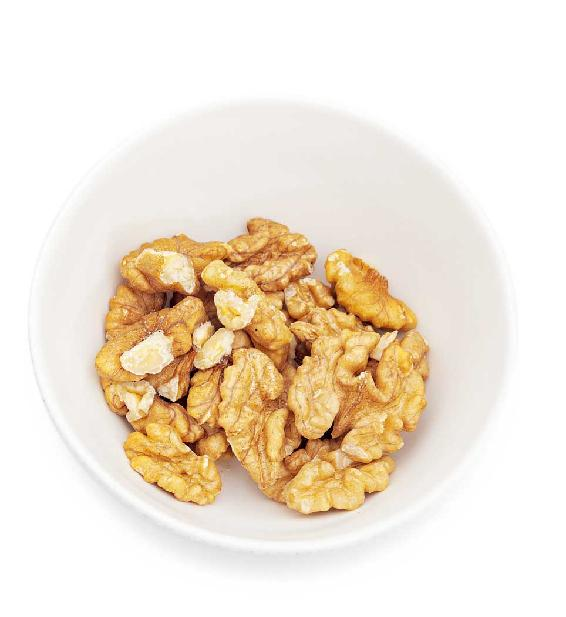
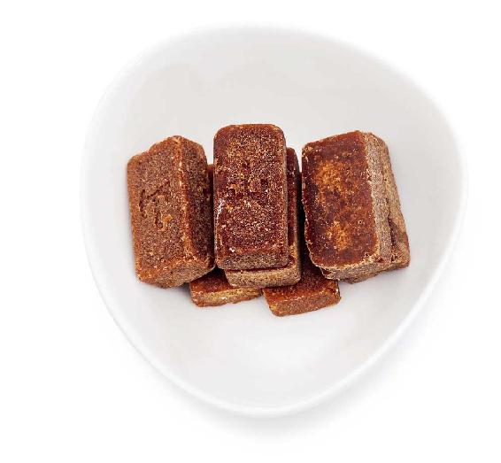
原料：带皮核桃仁1〜2两（50〜100克），红糖2两（100克）。
做法：
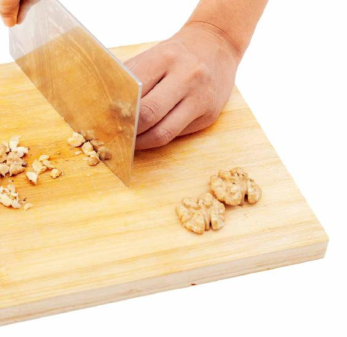
1.把核桃仁切碎，冷水下锅煮30分钟以上。
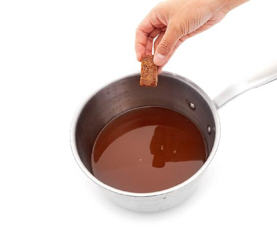
2.煮好后加入红糖，红糖溶化后就可以关火了。
核桃红糖茶
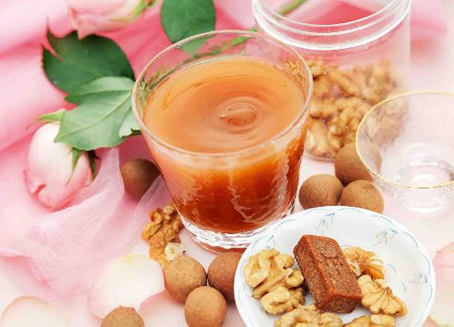
以上这种情况叫原发性痛经，可以采用这个方子来调理。
其实，这个方子的止痛效果不比止痛片差，有时候还更好一些。
有些刚进入青春期的女生不懂，在痛经的时候吃止痛片来止痛，这样对身体是没有好处的。止痛片只是让人暂时感觉不到疼痛，它不能调理疼痛的根本。
我建议，家长要给孩子树立正确的意识——用简单的食物来调理身体小小的不适。
读者评论：真是太有用了
江南菡萏：喝了一次核桃红糖茶，结果让我大吃一惊。子宫腺肌病折磨了我两年，每次例假都疼得死去活来，现在竟然不痛了。
糖糖薄荷_hm：真是太有用了，想当年考试遇上生理期，身体不舒服，都不知道如何做。现在跟着老师学习了很多，以后就会从容淡定地面对身体问题啦！ 每天听老师的讲解，调养身体，已经大半年没有生病了。
风晴lala：核桃红糖茶用了很多次，很神奇，不但止痛，脸色也会变红润一些，效果比平常补血好。
晗涵：我不爱吃核桃，痛经的时候煮了一碗核桃红糖茶，没想到好喝得很，止痛效果也不错。
王芳：核桃红糖茶里的核桃特别好吃，软糯糯的，没有生核桃那种涩涩的味道，感恩老师的分享。
允斌解惑：核桃红糖茶尽量喝新鲜的
Jasmine：核桃红糖茶煮好后，能放冰箱吗？
允斌：尽量喝新鲜的。
lucky：我痛经很多年，怀香山楂茶和核桃红糖茶可以一起喝吗？
允斌：可以的。
之前讲到两个提神的小方法：舌下含人参和吃香蕉。有人问，生理期的女生可不可以使用这两个小方法。
这需要根据每个女生自己的情况来定。如果是月经量多的女生就不能用，因为人参是热性的，有可能会增加出血量。如果是生理期觉得很不顺畅的女生，可以用人参提神的方法，因为人参有一定的活血作用，这时候用正好。
用香蕉提神的方法建议就不要用了。因为香蕉是偏凉性的，不适合在生理期的时候吃。
那这样会不会错失这个提神的机会呢？也不会，因为核桃红糖茶也是给大脑补充能量的。大脑能量的来源就是糖分，而红糖还含有矿物质，可以帮助大脑来集中注意力。
有的女生喝了核桃红糖茶后才发现，原来不是每个月的生理期都会痛经的，坚持喝了一段时间的核桃红糖茶以后，不仅从此告别了痛经，而且即使在经期也会觉得很舒服。
作为考生家长，真的不应该去纠结怎么样让孩子能在考试期间避开生理期这个问题。如果在平时就非常注意调理孩子的身体，那么无论是否在生理期，都是很舒服、很自然的，并不会影响到学习和考试的状态。
孩子身体有问题，与其临时抱佛脚想怎么样用药物干预孩子的身体，不如从现在开始，就好好地给孩子树立一个正确的健康饮食观念，让她的身体一直保持自然的天人合一的状态。这样无论是遇上考试还是其他什么事，都不用因为孩子的生理期而感到格外忧虑了。
允斌叮嘱：
1. 如果没有条件煮，也可以泡核桃仁。
2. 煮的时间也可以长一点，效果会更好。因为主要用到的还是核桃内皮的作用，而核桃内皮只有经过久煮，有效成分才能析出。
3.核桃红糖茶要趁热饮用。
4. 平时可以把核桃仁全部吃掉，但在考试期间，不要多吃。因为孩子的脾胃是比较虚弱的，这时候吃太多的核桃仁，比较难消化，所以重点还是喝煮好的水。
5.红糖的量，一定要足够。